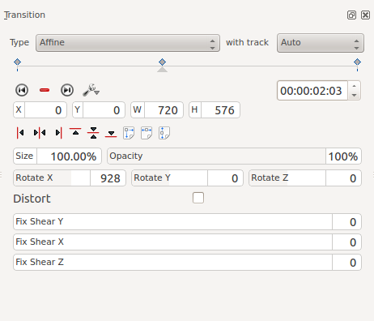
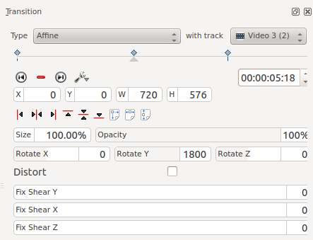
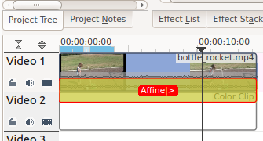

Affine Transition¶
Contents
Generates image rotation in 3D space, skew and distortion.
Provides keyframable animated affine transformations with dissolve functionality.
In many applications, this transition can be used instead of a Composite Transition transition and this provides a workaround to the composite transition “green tinge” bug reported by some. (Mantis #`2759 <http://www.kdenlive.org/mantis/view.php?id=2759>`_)
Example 1¶
Disolve using Affine Transition¶
To add a Dissolve, change the opacity to zero percent.
Rotation using Affine Transition¶
To rotate the image, add a keyframe and enter values for rotation. The units are 10ths of degrees. (e.g. 900 = 90 degree rotation).
Rotate X* rotates the frame in the plane of the screen.
Rotate Y* and Rotate Z create the illusion of 3D rotation when used dynamically with keyframes - see example below.
You can create a similar effect using the rotate_(keyframable) effect from the Crop and Transform group.
Example 2 - Rotate Y¶
This example is created using 3 keyframes. The second keyframe is shown below with a Rotate Y value of 1800 (=180 degrees). Keyframe one and keyframe three both have Rotate Y values of zero.
 The difference between Rotate Y and Rotate Z is that the apparent rotation in Rotate Y appears to be around a horizontal axis. The rotation in Rotate Z appears to be around a vertical axis